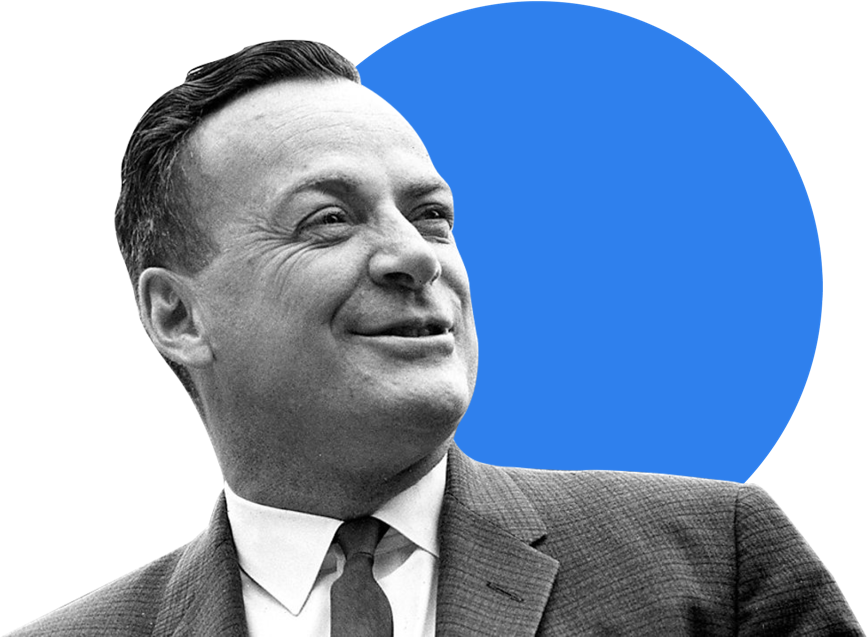

Главные проблемы в обучении
- Ни в школе, ни в институте нас не учат тому, как правильно изучать материал. Мы готовимся к экзаменам и учим билеты. Мы тренируемся решать однообразные задачи, чтобы лучше сдать тест, но часто в итоге это не дает нам реального знания. Зубрежка быстро выветривается и не приносит пользы.
- Вывод: учиться тоже нужно уметь, но почему-то этому мало где учат. Что с этим делать?
- Конкретные техники и упражнения помогают изменить подход к обучению, сделать его эффективным и захватывающим. Эти же техники применяются на примере обучения в Практикуме.
Цифры и факты
Про учёбу и мозг
86 миллиардов
Число нейронов в мозге человека
2.1 миллиарда
Число нуждающихся в повышении квалификации
Всемирный Банк, 2017
1000 терабайт
Объём памяти человека
500 триллионов
Число ответственных за обучение нервных синапсов у взрослого человека
420 миллионов
Число взрослых людей моложе 25 лет, не имеющих образования для трудоустройства
Всемирный Банк, 2017
17–20 лет
Пик обучаемости
1885 год
Открытие кривой забывания
1889 год
Открытие условного рефлекса
Метод Фейнмана
Выучить и не забыть.
Подробнее →
Принципы обучения
от Джоша Кауфмана
-
1
Выберите привлекательный проект.
-
2
Сосредоточьтесь на каком-то одном навыке.
-
3
Определите целевой уровень мастерства.
-
4
Разбейте навык на элементы.
-
5
Приготовьте всё необходимое для занятий.
-
6
Устраните препятствия для занятий.
-
7
Выделите специальное время для занятий.
-
8
Создайте быстрые петли обратной связи.
-
9
Занимайтесь по расписанию, короткими интенсивными интервалами.
-
10
Уделяйте внимание количеству и скорости.